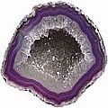

"Dez dentistas- dez diagnósticos"
Estudos sobre diagnósticos falhos ou a qualidade, honestidade & reprodutibilidade dos planos de tratamento dos dentistas
Considerando que (ao menos se falarmos em termos convencionais), o trabalho realizado por dentistas na boca das pessoas é, para todos os fins, irreversível, é fantástico que a cirurgia dentária seja considerada um fato normal e totalmente aceitável. A informação apresentada nessa página tem por fim alertar o leitor sobre o fato de que os diagnósticos e consequentes tratamentos estabelecidos e praticados por dentistas não são necessariamente "corretos". Embora eu geralmente cite aqui estudos alemães, não se engane – a probabilidade é de que esse seja um fenômeno universal (como também evidenciado na segunda página, sobre a reportagem acerca dos resultados obtidos em pesquisa conduzida sobre dentistas norte-americanos.
Em verdade, o dentista norte-americano “Paul Revere” escreveu em 1969/70 (no seu livro Dentistry and Its Victims [A Odontologia e Suas Vítimas]) que se alguém pede a dez dentistas por um diagnóstico do mesmo dente, obterá dez diagnósticos diferentes – uma observação cuja precisão foi francamente confirmada por um dos meus dentistas do passado. E, assustadoramente, tais diagnósticos podem variar entre “nada a fazer” (nenhum problema encontrado) e “necessidade de extração”!
E o dentista britânico Dr. Graeme Munro-Hall escreve em seu recente livro "Toxic Dentistry Exposed" ["Odontologia Tóxica Exposta"] sob o título UMA PALAVRA DE CAUTELA, "os profissionais vêem aquilo para o qual são treinados a ver e o que querem ver. Se um profissional não crê [...] exista, ele não verá [isso]."1
Estudos sobre a qualidade dos diagnósticos dentários e sua precisão: resultados assustadores
Uma investigação do Ortskrankenkassen Alemão (Companhias locais de seguro de saúde / Fundo Local de Saúde), 1999
Esse estudo liderado pelos dentistas Joachim Bauer e Hans Huber foi relatado em dois livros (Gunnar Meinecke „Zur White-Collar-Kriminalität im Gesundheitswesen am Beispiel der Zahnmedizin“, 2005, e Eberhard Riedel, „Beim Zahnarzt“, 1999) e teve por objetivo determinar o seguinte:
- Quão detalhada e cuidadosamente são realizados os exames dentários (o que afinal, constitui a base do tratamento subsequente)?
- Quão uniformes são os planos de tratamento e seus custos sugeridos por diferentes dentistas e quão próximo eles preenchem as reais necessidades do paciente?
- Com que facilidade o paciente pode compreender e comparar os vários planos de tratamento sugeridos?
Com esse objetivo, 20 pacientes-teste visitaram 199 consultórios dentários escolhidos aleatoriamente. Cada paciente esteve com 10 dentistas diferentes que, a cada um foi pedido um diagnóstico e tratamento para a boca do cliente.
Resultados:
1) 77% dos dentistas examinados demonstraram um desempenho seriamente inadequado de sua abordagem do diagnóstico. Para ser razoavelmente completa, a anamnese deve incluir as condições anteriores do paciente, um exame completo de seus dentes inclusive dos tecidos vizinhos, diagnóstico com raios-x e teste de todos os dentes sugeridos para receber coroa2 quanto à sensibilidade ao frio e galvânica. Em muitos casos os planos de tratamento tinham por base a simples inspeção visual, sem testes com raios-x ou para o frio, ou baseados num raio-x antigo que o paciente trouxe consigo, sem uma inspeção completa dos dentes.
2) Os tratamentos sugeridos eram arbitrários/aleatórios e divergiam fortemente um do outro.
A um paciente, por exemplo, foram propostos os seguintes tratamentos:
- Dentista 1: Coroa no incisivo frontal esquerdo.
- Dentista 2: Molar inferior esquerdo de trás – possivelmente tratamento de canal. Coroa para o incisivo esquerdo superior e segundo dente superior esquerdo. Coroa para os molares esquerdos inferiores 6 e 7
- Dentista 3: 6 e 7 inferiores: incrustação de cerâmica. Incisivo superior: tentar obturação simples.
- Dentista 4: 7 inferior esquerdo deve ser extraído devido a raiz infeccionada.
- Dentista 5: Coroa para o incisivo superior esquerdo, talvez também no lado direito para se obter uma aparência uniforme. Coroas de ouro nos molares inferiores 6 e 7.
- Dentista 6: Coroas para todos os quatro incisivos frontais.
- Dentista 8: Coroa para o incisivo esquerdo. Coroa para os molares inferiores esquerdos 6 e 7 se os dentes podem ser preservados.2
(traduzido de Riedel e Meinecke, respectivamente)
De modo geral, o trabalho com coroas, pontes e prótese foi planejado “fantasiosamente” e numa grande variedade de formas, tornando quase impossível comparar as variadas e amplamente divergentes sugestões de tratamento.
Interessantemente (e alarmante), a maioria dos pacientes tinha uma boa sensação após sua visita e confirmou haver entendido todas as explanações do dentista.
Programa de Televisão "Akte 96/30": câmera oculta revela diagnósticos equivocados
Um teste realizado pela equipe de cinegrafistas da televisão alemã SAT 1 também mostrou o quão diferentemente dentistas podem sugerir tratamento para o mesmo paciente. Uma mulher (que havia sido examinada previamente por um membro do conselho odontológico) visitou cinco consultórios dentários diferentes para o esclarecimento por diagnóstico de sua condição dentária. Ela recebeu cinco diagnósticos fundamentalmente diferentes, o único denominador comum sendo a tentativa de vender à paciente vários tratamentos protéticos desnecessários, inclusive a instalação de coroas em dentes saudáveis. (traduzido de Meinecke)
Capacidades de diagnóstico de dentistas "apavorante"
The Bayrisches Zahnärzteblatt [Revista odontológica da Bavária] cita em sua edição de dezembro de 1998 (www.blzk.de/archiv/bzb/heft12_98/9812s25.htm) de uma palestra do Professor Michael Noack em que ele examina a qualidade profissional de dentistas alemães. O Prof Noack observou que entre 70 a 80 por cento das obturações consistiam de renovação das restaurações com defeitos, cuja maior parte devia-se à formação de cárie secundária onde um diagnóstico exato era muito difícil. Em verdade os estudos demonstraram que aproximadamente em um terço das substituições de obturações, os dentistas irão exagerar no tratamento. A precisão de diagnóstico dos dentistas alemães é estimada entre 5 a 30 por cento, com o restante formado de diagnósticos equivocados, segundo Noack. Alarmante é que parece que as decisões são feitas mais ou menos atropeladamente, a julgar pelos resultados de um estudo in-vitro sobre a duplicação de decisões sobre tratamento. Noack concluiu dizendo que a capacidade de diagnóstico dos dentistas alemães era alarmante e que “quanto pior seja a medicina dentária, tanto mais dinheiro para o dentista", com “o pano de fundo sendo a edentulação sistemática dos pacientes”.
Um exemplo de diagnósticos equivocados comumente encontrados
Infecções de cavitações não diagnosticadas a causar dor de dente que leva à extração de dentes inocentes (mais em Glossário dental: dor de dente, dor dental e gengival Definições e causas.
Dois exemplos de diagnóstico dentário – apenas exceções à regra??
Testemunho de uma senhora de 40 anos, traduzido por CuraDente.com: "Embora cuidasse bem dos meus dentes, o dentista a quem visitava na juventude sempre encontrava duas cáries – todo ano ele encontrava duas, nunca três e certamente nunca zero. Agora creio que ele simplesmente apreciava usar a broca e queria incrementar sua renda já que a partir da mudança de dentista, aos 20 anos, nunca mais tive outra cárie.”
Duas pessoas relataram que há três anos, foram a um dentista e ele lhes disse que uma delas tinha uma pequena cárie que deveria ser perfurada e que a outra tinha duas cáries que causariam dor em seis semanas. Mas nenhuma delas teve qualquer dor até se passarem três anos, embora não tenham se submetido a tratamento dentário algum.
De cada dois dentistas um é criminoso?
Aproximadamente metade dos dentistas alemães fraudam muito os seguros de saúde, o que fez com que o Chefe da Sonderkommission Abrechnungsbetrug [Comissão Especial que trata de fraudes contábeis no Bundeskriminalamt alemão [Agência Federal de Investigação Criminal], Raimund Schmidt, compare suas ações ao crime organizado.
Como encontrar um bom dentista (se você crê que necessita de um dentista)
Ver Dicas.
Notas de pé de página
1 O mesmo é altamente provável que ocorra a outros profissionais de saúde, naturalmente.
2 Segundo os dentistas Drs. Munro-Hall em seu livro "Toxic Dentistry Exposed" [A Odontologia Tóxica Revelada], a coroa dentária pode matar o dente e portanto produzir toxinas no corpo. Para detalhes veja Riscos & complicações do uso de uma ponte dentária.